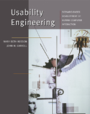

| About IR |
| Editors |
| Author instructions |
| Copyright |
| Author index |
| Subject index |
| Search |
| Reviews |
| Register |
| Home |
Rosson, Mary Beth and Carroll, John M. Usability engineering: scenario-based development of human computer interaction. Redwood City, CA: Morgan Kaufmann, 2001. 575pp. ISBN 1558607129 £33.95
In the last 10 years Rosson and Carroll developed a technique for implementing a user-centred approach based on scenarios. Basically scenarios are narrations describing a specific user interacting with a system. User motivations and skills, social and environmental constraints, and possible interaction ideas are all included to provide better support for system design. The strength of scenarios lies is in the power of letting everyone in the development team envisage and fully understand the system that is being created, by overcoming problems relating to lack of knowledge of users and their situations and vocabulary problems.
This book fully reports the technique and drives the reader step-by-step along the iterative process of envisaging and designing computer applications. When I say step-by-step I really mean it. Thus readers who already know the technique (at least partially) may find some passages boring. However, this attention to detail makes this book extremely valuable as teaching support: questions and exercises terminate each session, and points for reflections are scattered throughout the book.
Another aspect of the book would appeal to anyone with an interest in human-computer interaction (HCI). A large part is devoted to describing all the multiple aspects of the discipline. Most topics have only few paragraphs dedicated to them (e.g., a page for Gestalt experiments on perception, another half on Use-Cases developed by software engineers). Despite this space limitation the overview it gives is really excellent considering that references to the relevant literature are given for each topic.
All considered I would strongly recommend the book for any usability course - whether for the teacher or the student.
Daniela Petrelli
Department of Information Studies
University of Sheffield
January, 2003
How to cite this review
Petrelli, D. (2003) Review of: Rosson, Mary Beth and Carroll, John M. Usability engineering: scenario-based development of human computer interaction. Redwood City, CA: Morgan Kaufmann, 2001. Information Research, 8(3), review no. R084 [Available at: http://informationr.net/ir/reviews/revs084.html]